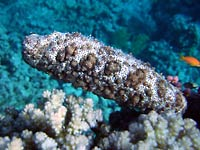

Голотурия почти выползла на берег

Настоящий огурец
Это ночное фото сделано не под водой. Голотурия (морской огурец, трепанг) замечена рядом с берегом на глубине 50см когда я шёл по пляжу. Я фотографировал эти существа в глубине, и видел их брачные танцы, когда они стоят вертикально и раскачиваются, еле держась за камень. Но в глубине не были видны цвета.
На фото видны несколько маленьких актиний, путешествующих вместе с морским огурцом. Так же они иногда прикрепляются к раковинам моллюсков и раков-отшельников.
Wiki : Голотурии, или морские кубышки, или морские огурцы (лат. Holothuroidea ) — класс беспозвоночных животных типа иглокожих. Виды, употребляемые в пищу, носят общее название трепанг.